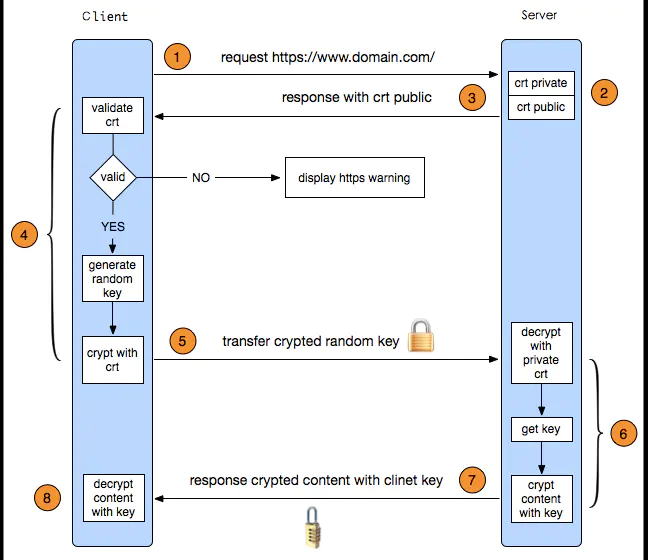

6 网络¶

http和https的区别？
http是明文传输，https是ssl加密传输，比http更安全。
http默认端口是80，https默认端口是443。
http连接是无状态的，https是需要身份认证的。
https需要到ca申请证书。
如何理解HTTP无状态无连接？
无状态：当客户端发送请求给服务器的时候，服务器并不知道是谁发的。
无连接：每个请求/应答，客户端和服务器都要新建一个连接，完成之后立即断开连接。
延伸：Cookie/Session用来保存状态。Keep-Alive用来保持连接。
TCP/IP五层协议和OSI七层协议？
TCP/IP五层协议：物理层、数据链路层、网络层、传输层、应用层。
OSI七层协议：物理层、数据链路层、网络层、传输层、会话层、表示层、应用层。
TCP三次握手四次挥手？
三次握手
1.客户端发送SYN信号，表示告诉服务器，我要建立连接。
2.服务器返回ACK=1和SYN=1给客户端，表示我已经接收到了客户端的请求，并接收了请求。
3.客户端收到来自服务端响应后，知道服务端已经接受连接请求，再次发送ACK给服务器，确认服务端的SYN。
四次挥手
1.主动方A发送一个FIN(终止信号)给被动方B，表示要终结主动方A到被动方B的连接。
2.被动方B收到了FIN信号，返回ACK信号给主动方，表示从主动方到被动方的连接关闭了，也就是主动方不能再发送数据给被动方。
3.被动方B在发送完数据后，给主动方A发送一个FIN信号，请求要终结被动方B到主动方A的连接。
4.主动方A收到了FIN信号，返回ACK信号给被动方B，表示从被动方B到主动方A的连接关闭了，也就是被动方不能再发送数据给主动方。
一个完整http请求会经历哪些过程？
浏览器发起请求
解析域名得到ip进行TCP连接
浏览器发送请求数据和请求头信息
服务器应答
服务器返回响应头信息和响应数据
关闭TCP连接
浏览器收到响应数据
HTTPS的原理？


路由器，集线器，交换机的区别？
路由器 用于连接不同网段并且找到网络中数据传输最合适的路径。
集线器 将一些pc机连起来组成一个局域网。
交换机 与集线器相似，区别在于集线器共享带宽，交换机独享带宽。
Internet物理地址和IP地址转换采用什么协议？
ARP (Address Resolution Protocol)
常见协议位于哪一层？
应用层（http协议）
传输层（tcp或udp协议）
网络层（ip协议）
数据链路层（网卡、路由器等）
dns解析
HTTP xxx状态码代表什么？
状态码 说明
1xx 信息，服务器收到请求，需要请求者继续执行操作
2xx 成功，操作被成功接收并处理
3xx 重定向，需要进一步的操作以完成请求
4x 客户端错误，请求包含语法错误或无法完成请求
5xx 服务器错误，服务器在处理请求的过程中发生了错误
get和post请求有什么区别？
get传输数据量小，但是效率更高。
post可以传输更多数据，一般来说是会更安全，不过现在很多抓包的，也不一定安全。
get只支持ASCII字符，post支持标准字符集。
TCP UDP协议区别？
TCP面向连接，UDP是无连接的。
TCP提供可靠的服务，UDP尽最大努力交付，即不保证可靠交付。
UDP具有较好的实时性，工作效率比TCP高。
TCP连接只能是点到点的，UDP支持一对一，一对多，多对一和多对多。
TCP对系统资源要求较多，UDP对系统资源要求较少。